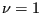

Another well-known problem is the incompressible laminar flow between two parallel plates. At time zero both plates are at rest, whereas at positive times one of the plates is moved parallel to the other plate with a velocity of 1. The analytical solution can be found in [67] in the form of a series expansion containing the complementary error function erfc. In the steady state regime the velocity profile is linear across the space in between the plates. The velocity profiles at different times are shown in Figure 31 and compared with the analytical solution for a unity distance between the plates and a kinematic viscosity . The input deck for the CalculiX results can be found in the test suite (couette1.inp). A time increment of 0.00012376 was chosen to obtain good results. It is yet unclear, how to calculate the increment needed to obtain correct predictions. The only feasible procedure right now is to try increasingly small increments unless the results do not change any more. The figure shows good agreement between the numerical and analytical values, indicating that the time integration in the CFD-implementation in CalculiX is correct. The small deviations at small times are due to the rather coarse mesh.